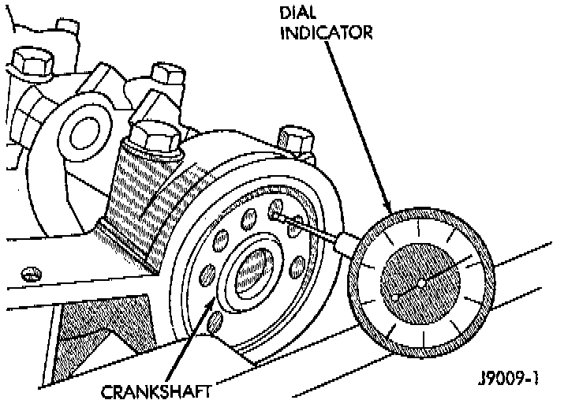

Installation

1. Lubricate the bearing surface of each insert with engine oil.
2. Loosen all the main bearing caps. Install the main bearing upper inserts.
3. Install the lower bearing inserts into the main bearing caps.
4. Install the main bearing cap(s) and lower insert(s).
5. Tighten the bolts of caps 1, 2, 4, 5, 6, and 7 to 54 Nm (40 ft. lbs.) torque. Now tighten these bolts to 95 Nm (70 ft. lbs.) torque. Finally, tighten these bolts to 108 Nm (80 ft. lbs.) torque.
6. Push the crankshaft forward and backward. Load the crankshaft front or rear and tighten cap bolt No. 3 to 54 Nm (40 ft. lbs.) torque. Then tighten to 95 Nm (70 ft. lbs.) torque and finally tighten to 108 Nm (80 ft. lbs.) torque.
7. Rotate the crankshaft after tightening each main bearing cap to ensure the crankshaft rotates freely.
8. Check crankshaft end play. Crankshaft end play is controlled by the thrust bearing which is flange and installed at the No. 2 main bearing position.
a. Attach a magnetic base dial indicator to the cylinder block at either the front or rear of the engine.
b. Position the dial indicator rod so that it is parallel to the center line of the crankshaft.
c. Pry the crankshaft forward, position the dial indicator to zero.
d. Pry the crankshaft forward and backward. Note the dial indicator readings. End play is the difference between the high and low measurements. Correct end play is 0.038 - 0.165 mm (0.0015 - 0.0065 inch). The desired specifications are 0.051 - 0.064 mm (0.002 - 0.0025 inch).
e. If end play is not within specification, inspect crankshaft thrust faces for wear. If no wear is apparent, replace the thrust bearing and measure end play. If end play is still not within specification, replace the crankshaft.
9. If the crankshaft was removed, install the crankshaft into the cylinder block.
10. Install main bearing cap brace tighten nuts to 47 Nm (35 ft. lbs.) torque.
11. Install oil pump assembly. and tighten attaching bolts to 23 Nm (17 ft. lbs.).
12. Install the oil pan,
13. Install the drain plug. Tighten the plug to 34 Nm (25 ft. lbs.) torque.
14. Lower the vehicle.
15. Install the spark plugs. Tighten the plugs to 37 Nm (27 ft. lbs.) torque.
16. Fill the oil pan with engine oil to the full mark on the dipstick level.
17. Connect negative cable to battery.